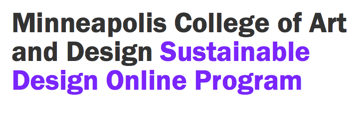

Modules Page
.blog-title

Minneapolis College of Art and Design
Sustainable Design Online Program
.utility-nav
Request a brochure
mcad.edu/sustainable
.main-nav
Main Navigation
Students
Faculty
Events
About
Search
.article-block
Biomimicry
Feb 20, 2014
Design Rules for Sustainability
Biomimicry
Feb 20, 2014
Design Rules for Sustainability
Biomimicry
Feb 20, 2014
Design Rules for Sustainability
Biomimicry
Feb 20, 2014
Design Rules for Sustainability
.page-footer
.social-media
facebook
twitter
pinterest
linked-in